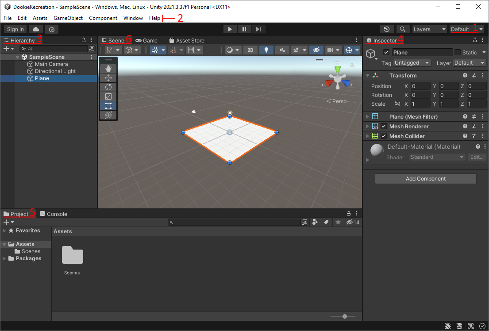

Dookie Dodger Tutorial
This is a game where we move our car left and right to dodge the bird poos dropping down on us. This project will teach you how to use many important basic features of Unity like how to edit scenes and objects, how to set up prefabs, physics and UI, and how to write simple code.

Create Unity Project
- Create a new 3D Unity project and call it 'Dookie Dodger'.
- (This project was designed for version 2021.3, but will work in most other versions)
Layout and Windows:
To build games in Unity you need to use different 'Windows' to edit each part of the game. Windows can be moved, opened and closed, but the default layout has everything you need to make simple games. You can reset to the default layout by opening the layout dropdown in the top right.
Assets and Scenes:
- On the bottom left is the 'Project' window, which shows all the files and folders in your
unity project.
- The Assets folder should already have a folder called 'Scenes', with a file called 'SampleScene' in it. Scenes are collections of objects used to make different levels or sections of a game.
- Copy the 'DookieStarterFiles' asset pack into the assets folder.
- Click 'Import' in the menu that pops up.
- If you drag the pack into Unity directly it should open the import menu automatically.
- If not, you can double click on the file in unity.
- Go into the scenes folder and open the 'DookieDodger' scene.
Editing Objects:
- The window on the left is called the Heirarchy - it has a list of all the objects in the scene.
- Click on the 'Ground' object in the Heirarchy. This will open up information about the object in the Inspector window on the right.
- It will also highlight the object in the Scene view. You can look around the scene by holding
right-click then moving your mouse or pressing W/A/S/D.
- To 'focus' on an object in the scene view, click on it in the heirarchy then put your mouse in the scene view window and press 'F'.
- With the Ground object selected, look in the inspector. Objects in Unity are made up of 'components' which create different parts of the object like what it looks like, how it interacts with physics, or special custom behaviors.
- Objects always have a Name at the top, and a 'Transform' component just beneath it that controls where it is (position), how it is rotated (rotation) and how big it is (scale).
- Select the 'Ground' object and check that the position says (0, 0, 0), and the scale says (5, 5, 5). Change some of these Transform numbers to see what they do, then return them to the original values by pressing ctrl+z to undo.
Set up the Scene:
Road:
- Go into the textures folder, and drag the 'Road' texture on to the Ground plane in the scene
view.
- This will make it look like there is a road on the plane and also creates a new folder called 'materials' with a new material in it.
- Materials are used to define what an object looks like. Changing a material will change all objects that use it, so you usually need a new material for each different object.
Power-lines:
- Go into the models folder, and drag the powerpole model into the scene next to the road.
- Change its position using the inspector: (-5, 0, -15) works well.
- Open the 'materials' folder, then right-click. In the menu that opens, go to 'Create' at the top, then select 'Material' near the middle.
- Call the new material 'Powerpole'.
- Select the material - its properties will appear in the inspector.
- Click on the white square next to where it says 'colour' and use the window that pops up to change it to good colour for a power-pole (e.g. brown).
- Drag the new material onto the power pole in the scene view.
- Select the pole and use ctrl+d to duplicate it.
- Move the new pole 30 units along the road.
- Tip: you can 'add' to numbers in fields instead of just changing them:
- After selecting the second poles, click on the 'z' field (this will select the number), then click again (this will put the cursor in the field) then type '+30' at the end of the number to 'add' to it instead of replacing it.
- You can see it move as you type, and once you press enter or click on something else, the number in the field will change to the result of the maths.
We have the power poles now, but we want power lines for the bird to sit on.
- Create a 'line renderer' object by going to the Menu Bar and clicking GameObject->Effects->Line.
- In the heirarchy, select the new line object, then click and drag it onto the first power pole. This makes it a 'child' of the power pole, meaning its position, rotation and scale will be based on those of the Parent.
- Move the line so that its origin aligns with one of the spikes.
- Tip: (3,-0.7,15) is a good position.
- A line renderer draws a line connecting each of the points we give it - we can see these in the inspector by clicking where it says 'points' to open the dropdown.
- Keep the first point at (0, 0, 0), but change the second point to line up with the second power
pole.
- If you did the last step right this should be easy - just set the point to (0, 0, 30).
- The line looks right now except for the colour - create a new material for it just like we did for the power poles (black is a good colour).
- Now that the line looks good, duplicate it 3 times using ctrl+D, and move the new ones to connect
each set of power pole spikes.
- Tip: You can move objects with the position numbers, or by using the move tool in the scene view (hotkey: 'W').
Bird Model:
- Go into the models folder and drag the seagull model into the scene.
- The seagull has been set up to work with a special texture - find the seagull texture and drag it
onto the seagull.
- This will create a new material called 'Seagull'.
- Since the seagull is made of 3 seperate objects (body, wings and legs), we need to drag the material onto each of them.
- Move the seagull so that it is sitting on the powerline closest to the road.
Camera:
- The camera is an object in the scene which is used when we actually play the game. It can be moved around (e.g. by making it a child object of a player character), and usually show something different to the scene view camera.
- (Skip this step if the camera is already set up nicely in the scene)
- You could move the camera manually, but it's easier to copy your scene view perspective onto it.
- Move the scene view camera so that you can see the bird, the power-lines, and the road.
- Right click on the 'MainCamera' object in the hierarchy, and select 'align to view'.
- This will let us see everything nicely when we play the game.
Next we need to make the 'poop' projectiles that the player will have to dodge. We'll do this by making special objects called prefabs that we can duplicate using some code. The first object will be for when the poop is falling, and the second will be for when it splats on the ground (or the car).
Poop Projectile:
- Create a sphere object by clicking GameObject->3D Object->Sphere.
- Change the name to 'FallingPoop'.
- Use the 'scale' property in the transform component to make it a good size compared to the
bird.
- Tip: you can click the chain icon to make x, y, z all change at the same time.
- Use menu bar to add a particle effect to the poop.
- Edit the particle effect to look like a trail of stink or dirt coming off the poop:
- Change the start lifetime to 0.5.
- Change the start speed to 1.
- Change the start colour to brown.
- Change the gravity modifier to 1.
- Change the simulation space to 'world' (this will let the particle trail behind the poop when it moves, instead of moving with the poop).
- In Emission:
- Change the rate over time to 10.
- Change the rate over distance to 1 (this will make more particles spawn when the poop is moving faster).
- In Shape:
- Change the angle to 10.
- Change the radius to be smaller than the poop (e.g. 0.3).
This will be the poop that comes out of the bird, but it wouldn't look right if it stayed like this after it hit the ground, so lets make a different poop for it to turn into when it hits something:
Squished Poop:
- Create another sphere and call it 'SquishedPoop'.
- DELETE the collider from this sphere.
- Move it so that the middle of it is touching the road (e.g. 0, 0, 0).
- Make the y scale of the sphere 0.2 (scale = 1, 0.2, 1) so that it's mostly flat.
- Create a new sphere and call it 'PoopSpot'.
- We are going to use these to look like the little black spots in bird poop, so we need these spheres to be black - you can either make a new material for them, or use an existing material.
- Once the sphere is black, make it a child of the 'SquishedPoop'
- Move and scale it to look like a lump in the squished white sphere.
- You can type in number, or you can swap to the scale tool (press 'R' or click on the icon). Then you can click on the middle (grey) cube to scale the object evenly in all directions.
- DELETE the collider from this sphere too.
- Duplicate the poop spot, then move and scale it to look like a different black spot.
- You may want to look up bird poop so you can accurately re-create the look!
We can use this new the poop to splat on the ground. A common trick to create effects like this is to delete the moving object and create a new object in the same place. This is often done with bullets and the bullet-holes that appear where they land, or missiles and explosions, or enemies and their dying effects.
- Create a folder for scripts to go in called 'Scripts' (right-click->Create->New Folder).
- Create a new script called 'Poop' in the scripts folder.
- Create a variable 'public GameObject squishedVersion;'
- In the script, add an 'OnCollisionEnter' event. If you have intellisense on it will automatically fix the function, otherwise copy the code below.
- In the event, use the 'instantiate' function to create a copy of the squished version with the current poops position and rotation.
- Then destroy the current poop.
The 'Poop' code should look like this:
public GameObject squishedVersion;
private void OnCollisionEnter(Collision collision)
{
Instantiate(squishedVersion, transform.position, transform.rotation);
Destroy(gameObject);
}
Make the poop fall and splat:
- Add the 'Poop' script to the falling poop.
- Give the falling poop a Rigidbody and a Sphere Collider.
- In the Rigidbody, change the 'Collision Detection' to 'Continuous Speculative' - this will make sure the poop stops exactly where it hit the ground, instead of sometimes getting stuck under it.
- Make the squished poop into a prefab (create a new prefabs folder!) and delete the original.
- Add the squished poop prefab into the poop script variable.
- Press play on the scene - the poop should fall with a nice trail, then turn into the squished poop when it hits the ground!
This isn't quite right though - the squished poop is floating above the ground! We'll need to make the code a little bit more complex to fix this:
- Go back to the collision event in the poop script.
- Before instantiating the squished version, figure out where the collision happened like this: 'Vector3 collisionPoint = collision.GetContact(0).point;'
- Now, get the poop to instantiate at this point instead: 'Instantiate(squishedVersion, collisionPoint, transform.rotation);'
- This will make the squished poop spawn touching where the falling poop touched the ground.
- Test it again!
- If you're happy that it's working well now, make the falling poop into a different prefab so we can make the bird spawn it later, then delete the original from the scene.
The 'Poop' code should now look like this:
public GameObject squishedVersion;
private void OnCollisionEnter(Collision collision)
{
Vector3 collisionPoint = collision.GetContact(0).point;
Instantiate(squishedVersion, collisionPoint, transform.rotation);
Destroy(gameObject);
}
Bird Code:
Now we want to make the bird move back and forth along the power-line, and drop a dookie every few seconds.
- Create a new script called 'Bird' in the scripts folder.
- In the script, add these variables:
- 'public float speed = 2f;'
- 'public Transform leftPoint;'
- 'public Transform rightPoint;'
- 'private bool movingRight = true;'
- These will let use control where the bird can move, what direction it is moving, and how fast it moves.
- In the update event, add a line to move the bird towards the right point:
- 'transform.position = Vector3.MoveTowards(transform.position, rightPoint.position, speed * Time.deltaTime);'
- This function works by returning a position which is where something would be if it was moving from the 'current' position towards the 'target' position at this speed ('maxDistanceDelta').
- This will move the bird towards the right point, but once it gets there it will just stop - we want it to move back towards the left point when it reaches the end instead.
- Create an if statement 'if (movingRight)' and put the move line inside it.
- Create an 'else' statement after it.
- Copy the move function into the else statement, but change the target position to be the left point instead of the right point.
- Now we need to swap directions when we reach the points:
- Inside the if statement, create a new if statement to check if we have reached the right point:
- 'if (transform.position == rightPoint.position)'
- If we have, swap to moving left like this:
- 'movingRight = false;'
- Now in the else statement part (which happens when we are moving left), do the opposite:
- 'if (transform.position == leftPoint.position)'
- 'movingRight = true;'
The code should look like this:
public Transform leftPoint;
public Transform rightPoint;
public float speed = 2f;
private bool movingRight = true;
void Update()
{
if (movingRight)
{
transform.position = Vector3.MoveTowards(transform.position, rightPoint.position, speed * Time.deltaTime);
if (transform.position == rightPoint.position)
movingRight = false;
}
else
{
transform.position = Vector3.MoveTowards(transform.position, leftPoint.position, speed * Time.deltaTime);
if (transform.position == leftPoint.position)
movingRight = true;
}
}
Test the code!
- Add the 'Bird' script to the seagull.
- Create a new object called 'LeftBirdPoint', and put it at the start of the power line
hanging over the road.
- Tip: to get the exact right position, you can make the object a child of the line renderer, set its position to (0, 0, 0), then make it not a child of the line.
- Duplicate the object, call the new one 'RightBirdPoint', and move it to the other end of the power-line (remember that you can use the '+30' trick here!)
- Drag the points into the variables in the bird script.
- Note: even though we named them 'left' and 'right', they don't have to be in the correct slots, because the bird will just bounce between them anyway - they're just good names that show what we're using the variables for.
- Press play on the scene - the bird should move back and forth between the two points you set!
Make the bird poop:
Now we want the bird to poop every few seconds.
- Add some new variables to the Bird script:
- 'public GameObject poopPrefab;'
- 'public float poopDelay = 3f;'
- 'private float nextPoop = 0f;'
- We want the bird to Instantiate the poop prefab whenever it has been 'poopDelay' seconds since the 'lastPoop'.
- After the move part of the code in update, check if is time for the next poop using:
- 'if (Time.time >= nextPoop)'
- If it is, instantiate a new poop at the birds position:
- 'Instantiate(poopPrefab, transform.position, poopPrefab.transform.rotation);'
- Now store the current time as the last time a poop was spawned:
- 'lastPoop = Time.time;'
- Go into the scene view and drag the falling poop prefab into the bird script.
- Press play to test if the bird is pooping and moving!
The 'Bird' code should look like this now:
public Transform leftPoint;
public Transform rightPoint;
public float speed = 2f;
public GameObject poopPrefab;
public float poopDelay = 3f;
private float lastPoop = 0f;
private bool movingRight = true;
void Update()
{
if (movingRight)
{
transform.position = Vector3.MoveTowards(transform.position, rightPoint.position, speed * Time.deltaTime);
if (transform.position == rightPoint.position)
movingRight = false;
}
else
{
transform.position = Vector3.MoveTowards(transform.position, leftPoint.position, speed * Time.deltaTime);
if (transform.position == leftPoint.position)
movingRight = true;
}
if (Time.time >= lastPoop)
{
Instantiate(poopPrefab, transform.position, poopPrefab.transform.rotation);
nextPoop = Time.time + poopDelay;
}
}
CAR:
Now we need to make the car that the player controls.
- Go into the models folder and find the 'Car' model, then drag it into the scene.
- Move it so it is on the road in between the poles and underneath the bird.
- The car looks pretty bad like this, so lets fix that with some materials:
- Create a new material for the car, and change the colour to red.
- You don't have to make the car red, but we do want it to stand out in the scene, so make sure it isn't the same colour as any of the other things in the scene.
- Now we need the wheels to be black - just like the poop spots, we can either make a new material, or we can reuse one we already have.
- Create a new material for the car, and change the colour to red.
The car looks good, but now we need to make it move.
- Create a new script called 'Car'.
- We're going to use a very similar system to the 'Bird' script, so add these variables
again:
- 'public Transform leftPoint;'
- 'public Transform rightPoint;'
- 'public float speed = 2f;'
- This time, instead of always moving, the car needs to only move when we press the correct button.
Check if the player is pressing the Right arrowkey with this if statement:
- 'if (Input.GetKey(KeyCode.RightArrow))'
- If they are, move the car towards the right point:
- 'transform.position = Vector3.MoveTowards(transform.position, leftPoint.position, speed * Time.deltaTime);'
- Note: for the car which point is in which slot does matter, because if they're wrong the car will go the wrong direction when we press the button.
- Do the same code for the left arrow key, moving towards the left point.
The 'Car' code should look like this:
public Transform leftPoint;
public Transform rightPoint;
public float speed = 5f;
// Update is called once per frame
void Update()
{
if (Input.GetKey(KeyCode.LeftArrow))
{
transform.position = Vector3.MoveTowards(transform.position, leftPoint.position, speed * Time.deltaTime);
}
if (Input.GetKey(KeyCode.RightArrow))
{
transform.position = Vector3.MoveTowards(transform.position, rightPoint.position, speed * Time.deltaTime);
}
}
Now set up the points for the car to move between:
- Duplicate the two bird points.
- Change their names to 'LeftCarPoint' and 'RightCarPoint'.
- Move them down to be on the road (the easy way is to set the y value to 0).
- Drag each point into the right slot on the car script (make sure they match up correctly!)
- Test the car!
Poop on the Car:
The car should be moving nicely between the poles now, but the poops go right through it! Lets fix that.
- Click on the car.
- Add a 'MeshCollider' component to it.
- Done! Now the poops can hit the car - but nothing happens when they do.
Game Over:
Lets make the game end if a poop lands on the car. If you did the sumo game, this will be familiar to you, but there's one thing that will need to be different. Since the poop is the thing that checks for collisions and knows when the game should end, we can't just put a reference to a gameover screen in the script, because the poop gets created during the game.
Singleton GameOverManager Script:
A nice easy way to deal with this is by using a singleton. This is when we put a reference to a specific object into a static variable, because static variables can be accessed easily from any script. They are called singletons because there will be problems if you have more or less than a single copy of the specific object.
- Create a new script called 'GameOverManager' in the scripts folder.
- Create a static singleton variable like this:
- 'public static GameOverManager singleton;'
- In the start event, make the singleton point at this specific script component:
- 'singleton = this;'
- Because we need this script to run on start we can't turn the gameObject with the script on and
off to hide the panel - so we'll need a reference to a separate one:
- 'public GameObject gameOverPanel;'
- Now make the functions that we're going to call using this script - GameOver and Restart:
- Create a GameOver function:
- 'public void GameOver()'
- Inside this function, enable the gameover screen:
- 'gameOverPanel.SetActive(true);'
- Then also set the time scale of the scene to 0. This will freeze time and stop the player from
moving and the bird from infinitely making more poops.
- 'Time.timeScale = 0;'
- Create a Restart function:
- 'public void RestartGame()'
- Set the time scale back to 1, or everything will be frozen when we restart:
- 'Time.timeScale = 1;'
- Allow the script to reload the scene by adding this outside the script:
- 'using UnityEngine.SceneManagement;'
- Back in the RestartGame function, load the scene:
- 'SceneManager.LoadScene(SceneManager.GetActiveScene().name);'
The GameOverManager code should look like this:
...
using UnityEngine.SceneManagement;
public class GameOverManager : MonoBehaviour
{
public static GameOverManager singleton;
public GameObject gameOverPanel;
// Start is called before the first frame update
void Awake()
{
singleton = this;
gameOverPanel.SetActive(false);
}
public void GameOver()
{
gameOverPanel.SetActive(true);
Time.timeScale = 0;
}
public void RestartGame()
{
Time.timeScale = 1;
SceneManager.LoadScene(SceneManager.GetActiveScene().name);
}
}
Now we need to trigger this code when the poops hit the car, but not when they hit the ground:
- Make a new tag called 'Car'.
- Click on the car.
- Underneath the name, it says 'Tag 'Untagged''
- Click on untagged to show the dropdown, then click 'Add Tag'.
- Click on the little plus icon under the Tags list.
- Type 'Car'.
- Click Save.
- Assign the Car tag to the Car.
- Click on the car.
- Click on the tag dropdown.
- Select 'Car'.
- In the 'Poop' script, add an if statement to check if the collision was with something
that has the 'Car' tag:
- 'if (collision.collider.CompareTag("Car"))'
- If it is, call the gameover function in the GameOverManager like this:
- 'GameOverManager.singleton.GameOver();'
- Explanation: From the 'GameOverManager' class we are getting the static variable 'singleton' (static variables are variables that are on the object type, not on each object separately), then since the singleton is a reference to an actual component, we can use that to call the 'GameOver()' function.
The new Poop script looks like this:
public GameObject squishedVersion;
private void OnCollisionEnter(Collision collision)
{
if (collision.collider.CompareTag("Car"))
GameOverManager.singleton.GameOver();
Vector3 collisionPoint = collision.GetContact(0).point;
Instantiate(squishedVersion, collisionPoint, transform.rotation);
Destroy(gameObject);
}
Gameover Screen:
Now we need to set up the game over screen that shows when the game ends, as well as a restart button.
- Create a new GameObject and call it 'GameOverManager'.
- Give it the 'GameOverManager' script.
- In the scene, add a UI panel (GameObject>UI>Panel), and call it 'GameOverPanel'.
- To make editing UI elements easier, change to '2D' mode in the scene view, and then either scroll out or press "F" when one of the elements is selected, so that you can see the canvas.
- Create two text boxes and make them children of the panel.
- You will need to import 'Text Mesh Pro' for these.
- Call the first text box 'GameOverTitle', and put it near the top of the screen.
- Change the text in it to something like 'GAME OVER!'.
- Make the text font be larger (e.g. 50), and change the width and height of the rect transform so that the text fits in it.
- Call the second text box 'GameOverDescription', and put it underneath the gameover title.
- Change the text to tell the player that they lost, and make sure the box is big enough again.
- Design decision - What should the text boxes say? Encourage the student to decide for themselves. If they want them to be centered, they can change the text alignment, and set the x position to 0.
- Explanation - The canvas is only used for UI elements, which need a 'RectTransform' instead of a normal transform. They go on top of other things on the screen, and the changes shape to fit onto the screen.
- Create a UI button, call it 'RestartButton', and put it underneath the other text.
- In the 'Button' component, add a function to the 'OnClick' event (click the plus at the bottom of the box).
- Drag the 'GameOverManager' object into the object field.
- Change the function to 'RestartGame' (click the 'No Function' dropdown, select 'GameOverManager', then select 'RestartGame').
- The button will have a child text object - change the text in this to 'Restart'.
- Deactivate the GameoverPanel (uncheck the tickbox at the top) - we only want it to be visible when the player loses the game.
The project is now finished!
Bonus Activities!
Sounds:
Games are better with sounds, so lets add some to Dookie Dodger. We're going to need a sound for the car, the bird pooping, the poop hitting the ground, and for the poop hitting the car (or the player losing). After that we can also add music to the background.
Custom sounds:
- If you want to and you are able to, you can record or find the sounds yourself! (but make sure you aren't distracting the people around you.)
- When you have the sounds ready, go into the 'Sounds' folder in unity, and create a new folder called 'Custom' - then copy the sounds into this folder.
If you're not making custom sounds, you can use the sounds in the 'Original' folder instead.
Car:
Lets start with the car sounds:
- Select the car object.
- Add an 'AudioSource' component to the car.
- Sounds in unity require three things to work - a sound (called an 'AudioClip'), a component to play the sound (called an 'AudioSource'), and a component to detect the sounds that should be playing (called an 'AudioListener'). The 'AudioListener' should already be on the camera.
- Unity needs AudioListeners in order to do realistic 3D sounds that are quiet when you're far away from them - but we won't be using these features in this project since the camera and the player are always in the same place.
- Drag the 'CarEngine' sound into the 'AudioClip' variable on the AudioSource (you could also click on the slot and select one, but this can be hard if you have lots of sounds).
- Test the scene!
The sound should be playing, and it should sound pretty good - except that it stops after the sound is finished - we want it to keep playing instead.
- In the AudioSource component, tick the 'Loop' setting. This will make the sound play again when it finishes.
- Test it again!
Bird (Pooping):
Next we want to add the pooping sound:
- Select the Seagull object.
- Add an AudioSource component to it as well.
- Choose a Pooping sound for the Seagull, and drag it into the AudioClip variable.
- We want this sound to only play when the bird poops, so we need to stop it automatically playing when the game starts - to do this, uncheck the 'Play on Awake' button in the AudioSource.
Now we need to tell the sound to play when the bird poops.
- Open the 'Bird' script.
- Go to the part of the code that Instantiates the poop and add this line after it:
- 'GetComponent<AudioSource>().Play();'
- That's it - test the pooping sound!
Poop Landing:
We can now do the same thing for the poop landing.
- Select the 'SquishedPoop' prefab.
- Add an AudioSource to it.
- Choose a sound for the poop hitting the ground, and drag it into the 'AudioClip' variable.
- Make sure 'Play on Awake' is ON.
- Test it!
Since this prefab gets created when the falling poop hits the ground, we can just make it play the sound right away and it will work without any script changes.
Game Over:
The last sound we want to add is for when when a poop hits the car and the player loses. We could make the falling poop play it when it hits the car, but it makes a bit more sense to have the 'GameOverManager' play the game over sound - since it is in charge of the game ending.
- Select the GameOverManager object.
- Add an AudioSource to it.
- Choose the game over sound and drag it into the 'AudioClip' variable.
- Make sure 'Play on Awake' is turned off.
- Go into the 'GameOverManager' script.
- In the 'GameOver()' function, add a line of code at the start to play the sound just like in
the bird:
- 'GetComponent<AudioSource>().Play();'
- Done!
Random Sounds:
When exactly the same sound is playing regularly in a game it can often start to get annoying and sound very fake and distracting, so game developers often use some simple tricks to help fix that - randomly choosing between a few different sounds, and changing the pitch of the sound a little bit so it doesn't sound exactly the same. Lets do these for the bird, since it makes sounds quite often:
- In the 'Bird' script, add this line before the line where we play the poop sound:
- 'GetComponent<AudioSource>().pitch = Random.Range(0.8f, 1.2f);'
- Save it and test the new sounds - they should be a tiny bit different each time.
- Add a new variable to the 'Bird' script:
- 'public List<AudioClip> randomPoopSounds;'
- Just after the random pitch line, add this code:
- 'int randomSoundNumber = Random.Range(0, randomPoopSounds.Count);'
- 'GetComponent<AudioSource>().clip = randomPoopSounds[randomSoundNumber];'
- This will change the clip in the audio source to a random one from the list.
- In the scene view, select the Seagull and drag all of the sounds that would be good for it pooping into the new list.
- This should be working now, and you can test it, but we'll make a few more changes to make our code better.
...
if (Time.time >= nextPoop)
{
Instantiate(poopPrefab, transform.position, poopPrefab.transform.rotation);
nextPoop = Time.time + poopDelay;
GetComponent<AudioSource>().pitch = Random.Range(0.8f, 1.2f);
int randomSoundNumber = Random.Range(0, randomPoopSounds.Count);
GetComponent<AudioSource>().clip = randomPoopSounds[randomSoundNumber];
GetComponent<AudioSource>().Play();
}
The 'GetComponent' function is useful, but using it too often can make our game run slowly, and it's also quite long - so since we have a lot of code doing things to the same component let's save it to a variable so we only have to do it once:
...
if (Time.time >= nextPoop)
{
Instantiate(poopPrefab, transform.position, poopPrefab.transform.rotation);
nextPoop = Time.time + poopDelay;
AudioSource audioSource = GetComponent<AudioSource>();
audioSource.pitch = Random.Range(0.8f, 1.2f);
int randomSoundNumber = Random.Range(0, randomPoopSounds.Count);
audioSource.clip = randomPoopSounds[randomSoundNumber];
audioSource.Play();
}
Much better - now you could try doing one or both of these tricks for the poops landing, since that sound also plays very often.
Unpredictable Bird:
Let's make the bird poop randomly so that the game is a bit harder.
- Go into the 'Bird' script.
- Add these variables:
- 'public float randomDelay = 1f;'
- 'public float changeDirectionChance = 0.4f;'
- Now we can use these to change how often the bird poops:
- Go back to the code where the poop is created and add this to the line that sets when the next poop
will happen:
- 'nextPoop = Time.time + poopDelay + Random.Range(-randomDelay, randomDelay);'
- This will make the bird poop at a random interval.
- In the scene view, go to the bird component and change the poopDelay to be smaller (e.g. 2 instead of 3), since we're randomly adding some time to it now.
Now lets make the bird sometimes change direction.
- At the end of the pooping code (after the sound is played), add an if statement that triggers
randomly based on the variable we made, like this:
- 'if (Random.value <= changeDirectionChance)'
- Random.value gives us a random number between 0.0 and 1.0, for example '0.73826849'. We can compare this number to a variable to decide how often the effect happens - so if we want it to happen a lot we can set our variable to 0.9, and if we want it only occasionally we can set it to 0.1.
- Inside the if statement, swap the direction that the bird is moving like this:
- 'movingRight = !movingRight;'
- The '!' means 'the opposite of' or 'not' - so we're setting the value to the opposite of itself.
- Test it!
The full 'Bird' code should now look like this:
public Transform leftPoint;
public Transform rightPoint;
public float speed = 2f;
public GameObject poopPrefab;
public float poopDelay = 2f;
public float randomDelay = 0.5f;
public float changeDirectionChance = 0.4f;
public List<AudioClip> randomPoopSounds;
private float nextPoop = 0f;
private bool movingRight = true;
// Update is called once per frame
void Update()
{
if (movingRight)
{
transform.position = Vector3.MoveTowards(transform.position, rightPoint.position, speed * Time.deltaTime);
if (transform.position == rightPoint.position)
movingRight = false;
}
else
{
transform.position = Vector3.MoveTowards(transform.position, leftPoint.position, speed * Time.deltaTime);
if (transform.position == leftPoint.position)
movingRight = true;
}
if (Time.time >= nextPoop)
{
Instantiate(poopPrefab, transform.position, poopPrefab.transform.rotation);
nextPoop = Time.time + poopDelay + Random.Range(-randomDelay, randomDelay);
AudioSource audioSource = GetComponent<AudioSource>();
audioSource.pitch = Random.Range(0.8f, 1.2f);
int randomSoundNumber = Random.Range(0, randomPoopSounds.Count);
audioSource.clip = randomPoopSounds[randomSoundNumber];
audioSource.Play();
if (Random.value <= changeDirectionChance)
movingRight = !movingRight;
}
}
The game is still a little too easy, so try duplicating the bird so there are two of them at once!